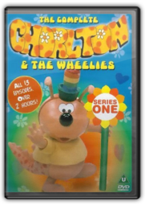
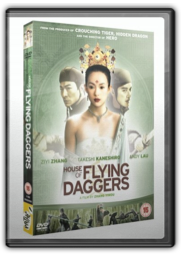
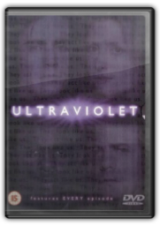
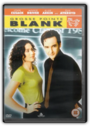
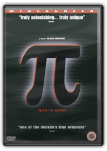
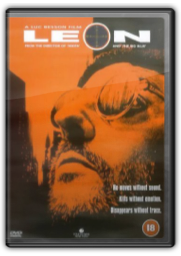

|

The Complete Chorlton & the Wheelies: Series One [1976]

"Jump in we'll take you for a spin/And show you round the Wheelie World" . For pretty much anyone between the ages of 25 and 40, merely the opening line of the theme to this crazed slice of cartoon bedlam will be enough to jog memories and pluck heartstrings. For everyone else, a brief synopsis is probably in order. Well, self-evidently there's Chorlton, the least intimidating dragon in television history, whose unexplained arrival among the Wheelies is a constant source of vexation to Fenella, a spectacularly ineffective witch with a base camp at Spout Hall (yes, it's a big kettle) and a cadre of mushroom-like toadies and "spikers" with whom she consorts to bring havoc to Wheelie World. Oh, and she also has a son, who only ever appears as a vast, disembodied foot. 
Circlereminds us that, despite his less than successful dalliances with film and TV, Eddie Izzard's reputation rests securely on his genius for stand-up comedy. Circlecomes on the back of an ever-growing global touring schedule, with this particular performance being recorded in New York. Always sensitive to his environment, the comedian throws in several local references to gratify his strongly partisan audience. Much of the delight of an Izzard performance is watching him weave from topic to topic, often painting himself into a corner, and Circleis no exception. A little slow to get started, once he finds his stride this is a veritable masterclass in live comedy, dealing with subjects ranging from the absurd to the everyday. Indeed, Izzard is almost a human equivalent of The Far Sidecartoon series, weaving the worlds of the bizarre and the ordinary together to make fresh points: witness his show-stopping account of the Death Star canteen. This is a must for all fans, equally so for those yet to fall under his spell. —Phil Udell 
Despite voluminous protest and nitpicking criticism from loyal fans of the original TV series (1978-80), the 2003 version of Battlestar Galacticaturned out surprisingly well for viewers with a tolerance for change. Originally broadcast on the Sci-Fi Channelin December 2003 and conceived by Star Trek: The Next Generationalumnus Ronald D Moore as the pilot episode for a "reimagined" TV series, this four-hour mini series reprises the basic premise of the original show while giving a major overhaul to several characters and plot elements. Gone are the flowing robes, disco-era hairstyles, and mock-Egyptian fighter helmets, and thankfully there's not a fluffy "Daggit" in sight... at least, not yet. Also missing are the "chrome toaster" Cylons, replaced by new, more formidable varieties of the invading Cylon enemy, including "Number Six" in hot red skirts and ample cleavage, who tricks the human genius Baltar! into a scenario that nearly annihilates the human inhabitants of 12 colonial worlds. |

House Of Flying Daggers [2004]
No one uses colour like Chinese director Zhang Yimou—movies like Raise the Red Lanternor Hero, though different in tone and subject matter, are drenched in rich, luscious shades of red, blue, yellow, and green. House of Flying Daggersis no exception; if they weren't choreographed with such vigorous imagination, the spectacular action sequences would seem little more than an excuse for vivid hues rippling across the screen. Government officers Leo and Jin (Asian superstars Andy Lau and Takeshi Kaneshiro) set out to destroy an underground rebellion called the House of Flying Daggers(named for their weapon of choice, a curved blade that swoops through the air like a boomerang). Their only chance to find the rebels is a blind women named Mei (Ziyi Zhang, Crouching Tiger, Hidden Dragon) who has some lethal kung fu moves of her own. In the guise of an aspiring rebel, Jin escorts Mei through gorgeous forests and fields that become bloody battlegrounds as soldiers try to kill them both. While arrows and spears of bamboo fly through the air, Mei, Jin, and Leo turn against each other in surprising ways, driven by passion and honour. Zhang's previous action/art film, Hero, sometimes sacrificed momentum for sheer visual beauty;House of Flying Daggersfinds a more muscular balance of aesthetic splendour and dazzling swordplay. —Bret Fetzer, Amazon.com

Ultraviolet - Complete Series (2 Disc Set) [1998]
Joe Ahearne
In the six-part British "vampire-slaying" mini-series Ultravioletwe discover that UV light is used (both in surgery and via high-tech weaponry) to identify people who have been infected with a disease labelled "Code 5". It's transmitted via a bite to the neck, but at no point in the series is the word "vampire" used. Instead, in the second episode ("In Nomine Patris") the nickname "Leech" is introduced. We learn that it was this disease, these "Leeches", that were responsible for the Fire of London, and that one in 20 people are already infected. In the opening episode, policeman Michael Colefield (Jack Davenport) is recruited into the secretive CIB. He meets its introverted priest-chief Pearse (Philip Quast), the emotionally driven Dr Angela March (Susannah Harker) and the bullish heavyweight Vaughan (Idris Elba). Spinning around Mike's suddenly complicated life are his best friend's jilted fiancée Kirstie (Colette Brown) and old flame Frances (Fiona Dolman). In later hard-hitting episodes we see a 12-year-old boy stab his teacher priest to death ("Mea Culpa") and the capture of a "Leech" ("Persona Non Grata"). This intriguing series ends having tied together most of its threads, but dangles worrying implications at the viewer... not so much to suggest a sequel as to hammer home everything at stake. —Paul Tonks

Grosse Pointe Blank [1997]
George Armitage
Hit man Martin Q Blank (John Cusack) is in an awkward situation. Several of them, actually. He's attending his high school reunion on an assignment; he's got a rival hit man (Dan Aykroyd) on his tail; and he's going to have to explain to his old girlfriend (Minnie Driver) why he stood her up on prom night. Grosse Pointe Blankis an amiable black comedy, cowritten by Cusack and directed by Jonathan Demme protégé George Armitage (Miami Blues), has the feel of Demme's Something Wildand Married to the Mob—which is to say its humour is dark and brightly coloured at the same time. Cusack and Driver are utterly charming—as is the leading man's sister, Joan, who plays his secretary. (Cusack received an Oscar nomination for her next role, in In & Out.) Alan Arkin is also very funny as Martin's psychiatrist. —Jim Emerson

Pi [1999]
Darren Aronofsky
Patterns exist everywhere: in nature, in science, in religion, in business. Max Cohen (played hauntingly by Sean Gullette) is a mathematician searching for these patterns in everything. Yet, he's not the only one, and everyone from Wall Street investors, looking to break the market, to Hasidic Jews, searching for the 216-digit number that reveals the true name of God, are trying to get their hands on Max. This dark, low-budget film was shot in black and white by director Darren Aronofsky. With eerie music, voice-overs, and overt symbolism enhancing the somber mood, Aronofsky has created a disturbing look at the world. Max is deeply paranoid, holed up in his apartment with his computer Euclid, obsessively studying chaos theory. Blinding headaches and hallucinogenic visions only feed his paranoia as he attempts to remain aloof from the world, venturing out only to meet his mentor, Sol Robeson (Mark Margolis), who for some mysterious reason feels Max should take a break from his research. Piis complex—occasionally toocomplex—but the psychological drama and the loose sci-fi elements make this a worthwhile, albeit consuming, watch. Piwon the Director's Award at the 1998 Sundance Film Festival. —Jenny Brown 
The greatest trilogy in film history, presented in the most ambitious sets in DVD history, comes to a grand conclusion with the extended edition of The Lord of the Rings: The Return of the King. Not only is the third and final installment of Peter Jackson's adaptation of the works of J.R.R. Tolkien the longest of the three, but a full 50 minutes of new material pushes the running time to a whopping 4 hours and 10 minutes. The new scenes are welcome, and the bonus features maintain the high bar set by the first two films, The Fellowship of the Ringand The Two Towers.

Leon [1995]
Luc Besson
Luc Besson (The Fifth Element) made his American directorial debut with Leon, a stylised thriller about a French hit man (Jean Reno) who takes in an American girl (Natalie Portman) being pursued by a corrupt killer cop (Gary Oldman). Oldman is a little more unhinged than he should be, but there is something genuinely irresistible about the story line and the relationship between Reno and Portman. Rather than cave in to the cookie-cutter look and feel of American action pictures, Besson brings a bit of his glossy style from French hits La Femme Nikitaand Subwayto the production of The Professional, and the results are refreshing even if the bullets and explosions are awfully familiar.—Tom Keogh |

Liam Clancy
Collection Total:
1389 Items
1389 Items
Last Updated:
Oct 4, 2009
Oct 4, 2009


 Made with Delicious Library
Made with Delicious Library